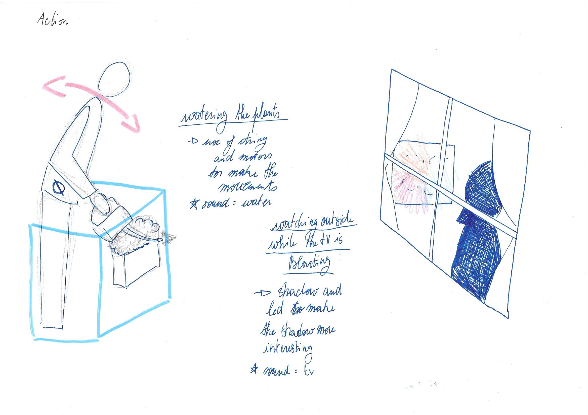
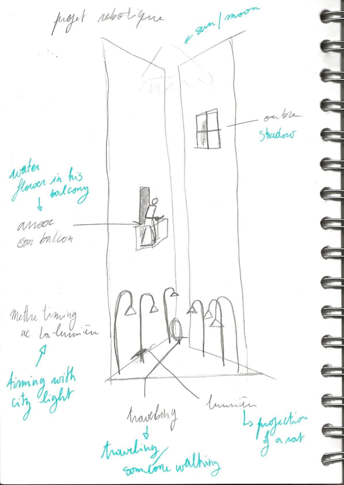
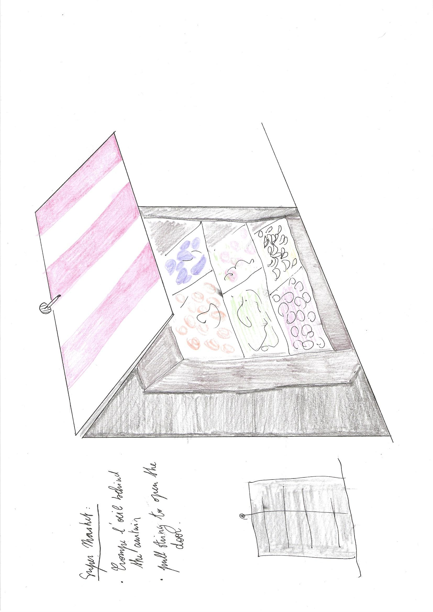
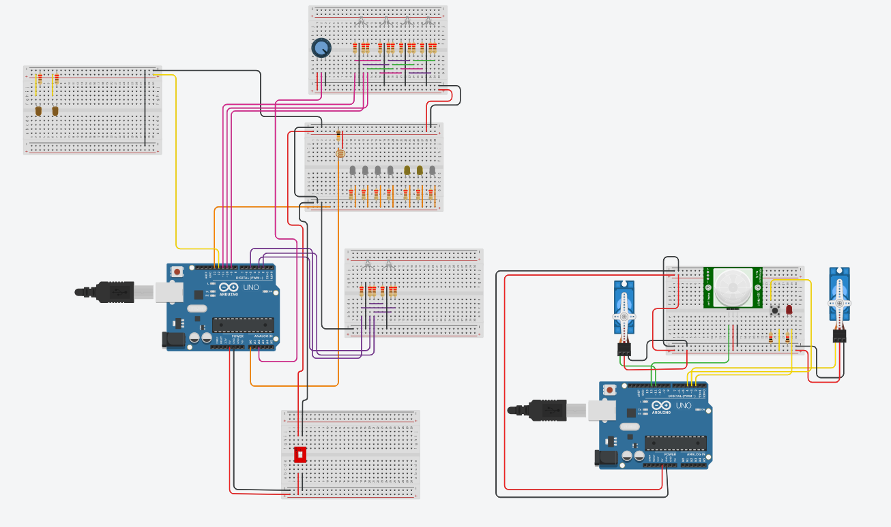
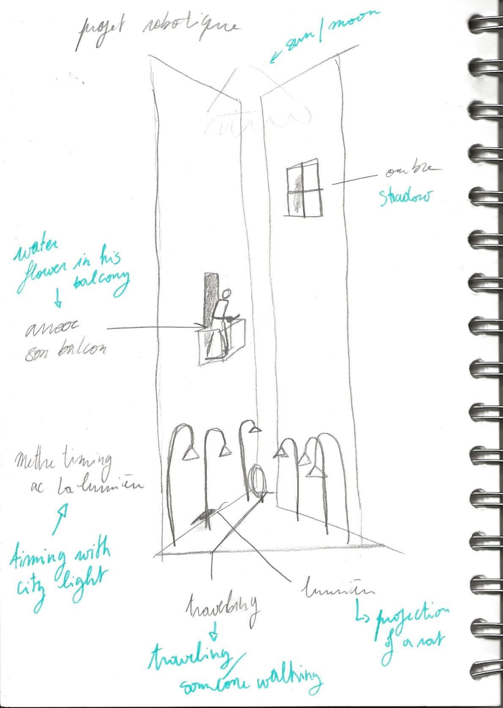
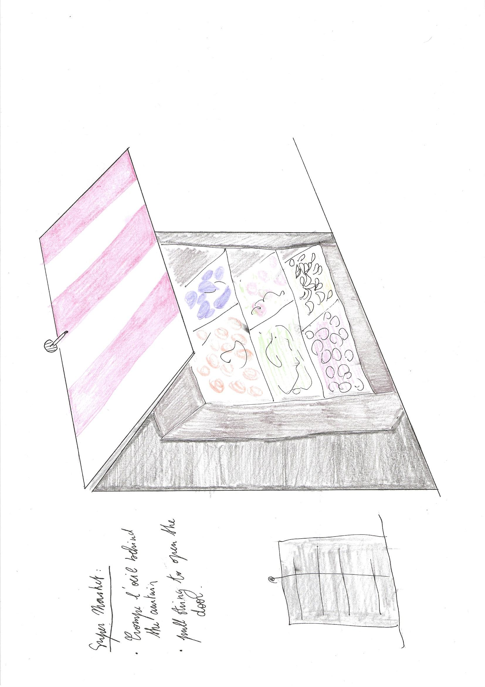
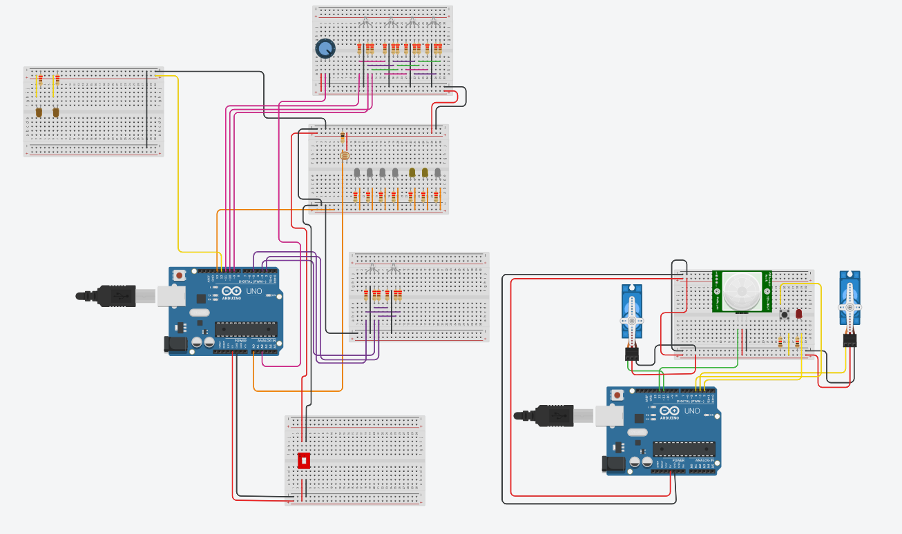

I created this project during the first lockdown in France. When I was looking out by the window, I would sometimes see passerby going about there day. This observation allow me to escape the strugle of the situation.
 




